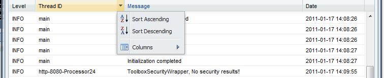
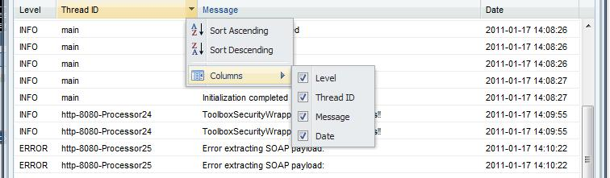
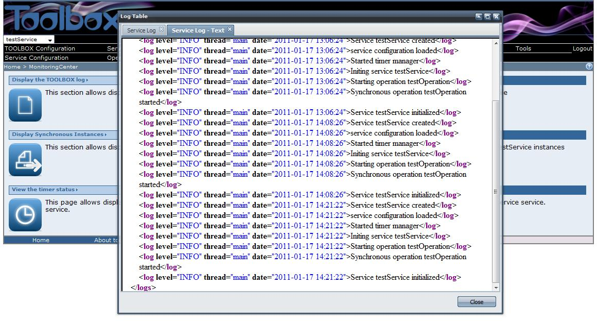

This functionality (and the corresponding section) is available only if a service is selected.
This functionality (and the corresponding section) is available only if a service is selected.
To display the log file of the selected service click on the "Display the Service log" section link in the "Monitoring center" page. The browser should display
The service log page allows both viewing the log file in text or user-friendly view.
User-friendly view
The service log page allows selecting the log level. Six log level are foreseen:
By default the INFO level is selected. If you want to change it select the log level from the combo area.
A table showing the TOOLBOX log file entries corresponding to the selected level should displayed.
It is possbile sort the log entries for Level, Thread Id, Text or Data.

Also, It is possbile custumize the columns to visualize.

To view the log file in text format click on the button "Text", the browser should display:

In this latter case the whole log file shall be displayed in a new tab, i.e. no filter on the log level will be applied.